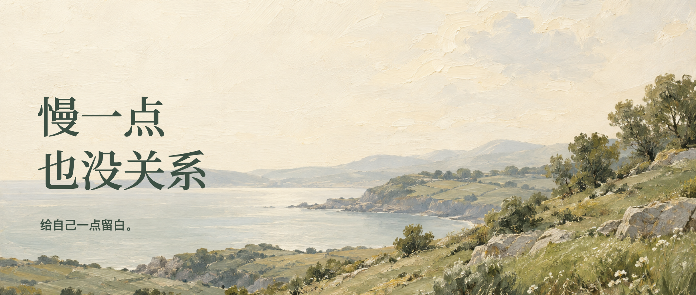
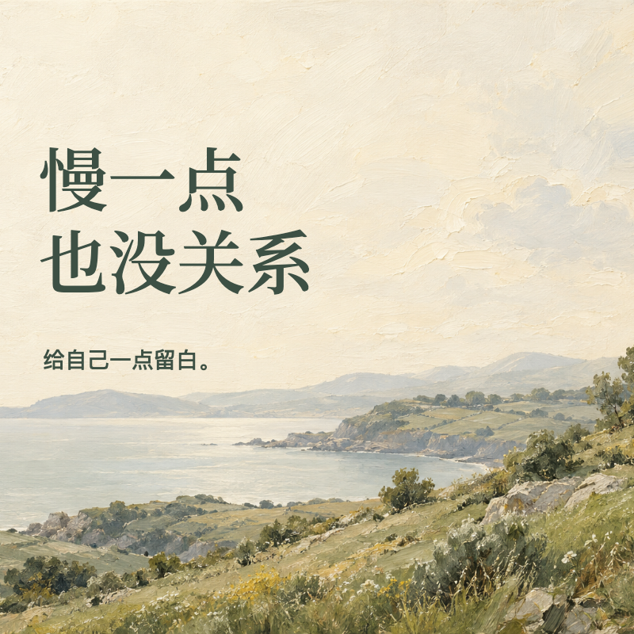
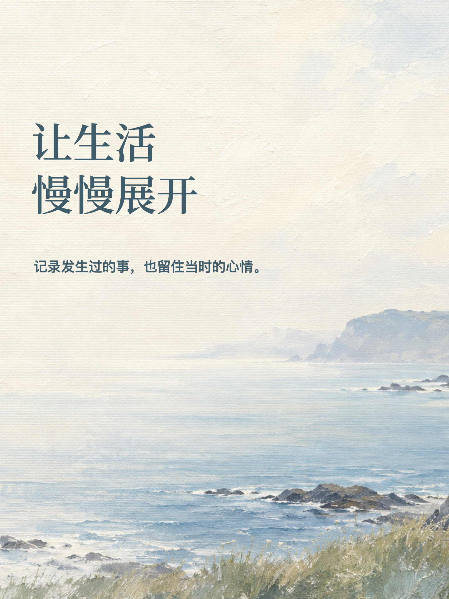

选一种画幅，开始做。
留白纸张、自然油画、纸艺与寻璞系列，也可以换成自己的图片。


公众号封面
把横版和方版一起做好，适合公众号文章封面。
横版 1880 × 800 方版 800 × 800进入公众号编辑器
图文首页图
用竖版讲清主题，也能改成方形分享卡片。
竖版 3:4 / 3:5 方版 1080 × 1080进入图文编辑器底图不必只有一种风格。上传自己的图片，或选颜色、材质，生成一张自己的纸张与淡彩底图。
留白纸张、自然油画、纸艺与寻璞系列，也可以换成自己的图片。


把横版和方版一起做好，适合公众号文章封面。
横版 1880 × 800 方版 800 × 800进入公众号编辑器
用竖版讲清主题，也能改成方形分享卡片。
竖版 3:4 / 3:5 方版 1080 × 1080进入图文编辑器底图不必只有一种风格。上传自己的图片，或选颜色、材质，生成一张自己的纸张与淡彩底图。